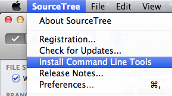

Command Line Tools
SourceTree comes with a command-line tool to allow you to launch SourceTree or switch to a running instance from the Terminal.
To install the tools, pick the item from the SourceTree menu (note: not available on the Mac App Store version, see below):

stree
This tool lets you start or activate SourceTree from the command line. With no parameters, it tries to open the current directory as a repository. If the current directory isn't a repository, SourceTree simply launches/activates.
You can also supply one or more folder paths as parameters to stree, which causes SourceTree to attempt to open those folders as repositories.
Mac App Store
Please note: if you obtained SourceTree from the Mac App Store you will not be able to install the command-line tools from the menu, because Apple do not allow it. If you wish to use the command-line tool, you can download a separate installer designed specifically for the App Store version.